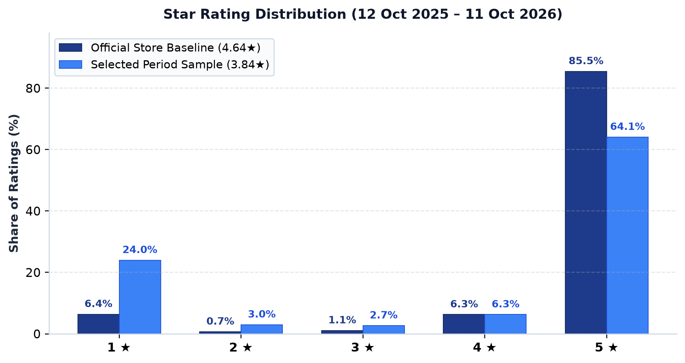
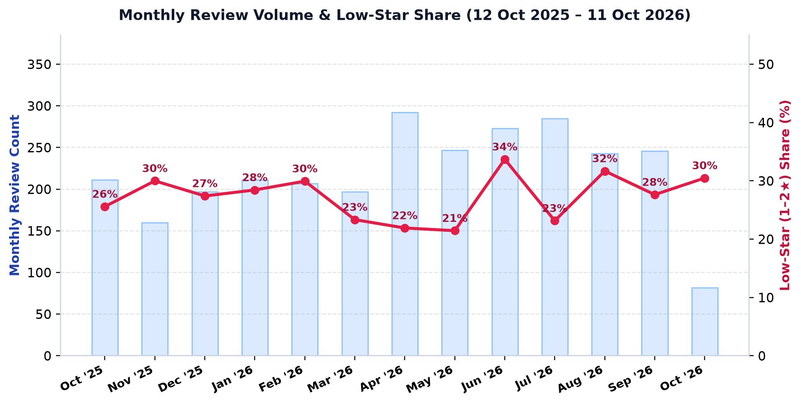
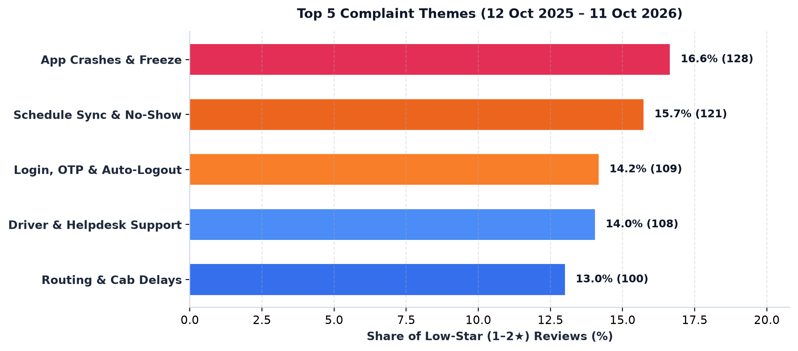
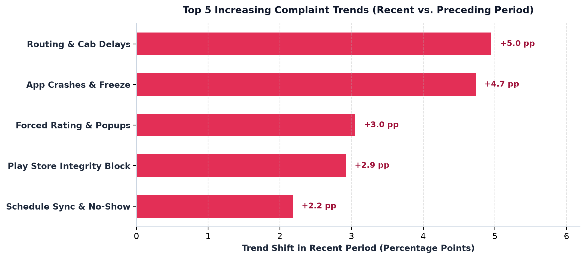
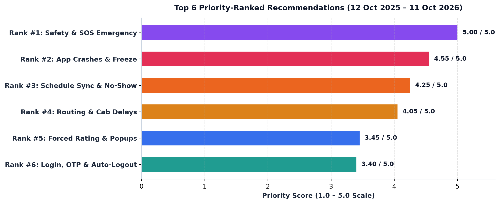

An empirical, repeatable Python workflow analyzing 100% of public employee reviews from September 2025 – September 2026 (N = 3,060) and isolating 90-day emerging regressions to drive prioritized Product, Engineering, and Operations fixes.

Monthly written review volume averaged 235 reviews/month ($N = 3,060$). Low-star (1–2★) share peaked in Dec 2025 (34.4%), improved to 21.1% in Mar 2026, and rebounded to 29.5% in Aug 2026 and 26.7% in Sept 2026.

Multi-label classification maps 66.6% (558/838) of low-star reviews to 10 specific product/ops themes (33.4% are generic 1-word complaints):

Comparing Jul 3 – Sept 30, 2026 ($n_{1-2\star}=196$) vs. Apr 4 – Jul 2, 2026 ($n_{1-2\star}=214$) reveals sharp surges in Routing Delays (+7.2 pp), App Crashes (+5.7 pp), and False Play Store Lockouts (+3.1 pp):

Track 1 escalates Safety & SOS (T01) to P0. Track 2 scores $0.25F + 0.25S + 0.20T + 0.15V + 0.15E_{\text{ease}}$ where higher Implementation Ease ($E_{\text{ease}}$) increases priority:

Designed for zero-touch monthly/quarterly FDE execution with strict separation between immutable raw snapshots (data/raw/) and processed outputs (data/processed/, reports/figures/):
hi, kn, ta, te).reviewId (`8,808` raw → `5,008` unique).Most Recent 90d vs. Preceding 90d relative to --primary-end while quarantining older history.